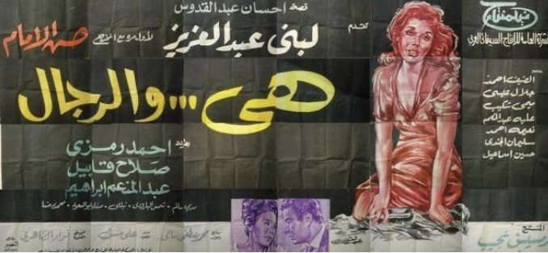

Hasan al-Imam's rendition of Ihsan Abdel Qudous's 'She and the Men' (1965)-- a story of class conflict, revenge and women realising that #MenAreTrash
A rather 'apolitical' and very personal reflection (that comes at a peculiar timing considering how the world is literally on fire -we are going to die- but maybe that is the perfect time for one to listen to oneself and think about everything that one would usually dismiss in the humdrum and drudgery of everyday or just out of sheer fear).
Teaching a course on love, for the second time, and going over different intellectual tropes and conceptualisations of love (biologically: bond formation, procreation, neurobiological basis for infant and familial care,..etc, psychologically: affective attachments necessary for mental and emotional growth and well-being, philosophically: disinterested care meant to impart and imbue life with meaning...etc, politically: love as a radical act of recognition of the other,..etc) brings in a crucial pull towards the subjective, asking oneself basic questions about what does love mean for one and what does a fulfilled and fulfilling emotional life mean.
And I have been struggling to answer that question. Participants in the course keeping asking me about that subjective aspect of my experience and I don't have anything to say really.
My experience in the LGBT+ community in Egypt, was and always is, premised on relationships and encounters that are grounded in transiency and deep distrust of any potential long-terms attachments or relationships. And its not just the usual religious, cultural and social opprobrium of contemporary iterations of same-sex relationships, in general and in Egypt specifically, but the very notion of understanding one's sexuality and emotional and affective needs.
The available means for socialisation and possibilities of encounter in the LGBT+ community in Egypt creates deep anger and frustration on all sides. The majority are unable to think of ways to conceive modes of relationality outside of the purview of what is possible and permissible, constantly re-frame their desires and aspirations in terms of "friendship" or camaraderie (God knows how I loathe how both terms are used outside of their contexts), insisting that same-sex relationships have a ceiling, and can only be understood or sustained, in a context like Egypt, as a variation of 'friendship'. So people can be 'friends' and still get married and live up to the social and cultural expectations/obligations of their class and social cohort.
Needless to say, its a framing that undermines 'friendship' and all other possibilities of 'romantic alternatives'.
My own anger and fear, is not that that I don't find friendships ten times as complex and maybe even more meaningful than romantic attachments, my anger and frustration is about the hijacking of friendship to cover up for thwarted desires for affection and love.
I find it a cheap adaptive trick to go beyond the boundaries of social and cultural propriety that denies everyone the possibilities of different forms and modes of relationalities.
And my position can be critiqued and attacked in all possible kinds of ways (that I am not culturally sensitive of the context, that I demand people behave in ways that are alien to them, that this is elitist,...etc).
But the truth is, outside of specific mode of relationalities, mostly borrowed from bourgeois capitalist experience (two partners who have fantastic careers, who move in together, buy property together, becoming dutiful consumers of a specific lifestyle,...etc) no one in Egypt allows themselves to think that are other possibilities.
People have internalised global capitalist fantasies about the desirable body, and the attractive lifestyle, fashioning and refashioning themselves endlessly as commodities, objects of consumption, and yet have continued to constrain themselves to very narrow notions of what is acceptable socially and culturally.
Its very difficult to articulate a coherent idea about love, when its very conception and experience is marred by so many layers of anger, rejection, self-loathing, profound distrust and uncertainty. I never thought of myself as "desirable" in any of the ways in which men in the LGBT+ community choose to fashion themselves accordingly (if intellectual queen is a type-- then maybe) and never understood and was able to accept the terms and norms that frame those experiences, here or elsewhere.
I love my friends, as Arendt would say, and take the immeasurable risk of trusting that others will recognise the inherent vulnerability and fragility of human encounters. Not sure how that speaks about 'romantic notions' or 'Love', but this is what it is.